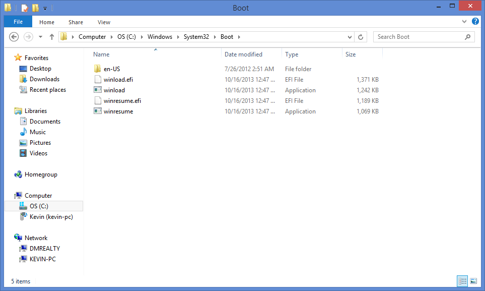
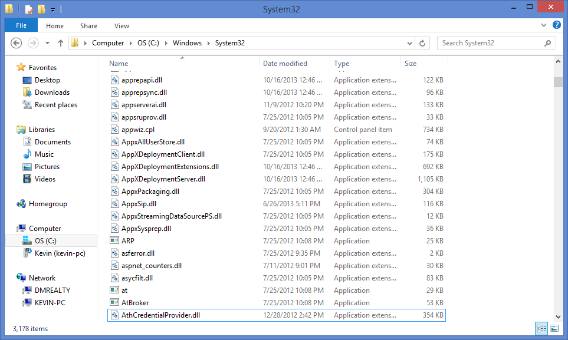
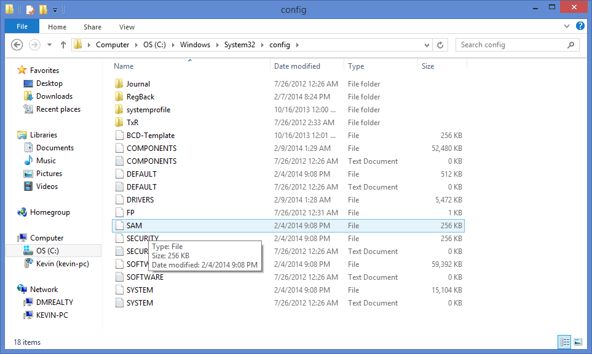
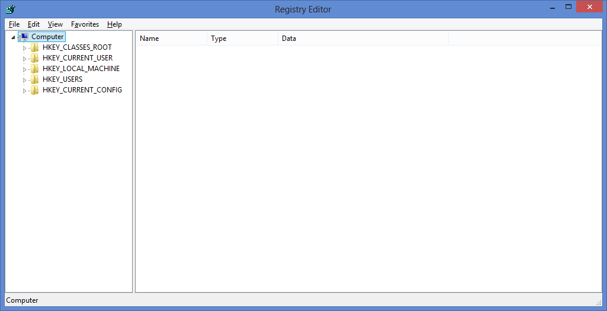

Section I Pre-OS Software
Mac OS X
Ubuntu
Windows
Windows boot files shown below.
Section II Kernal File(s)
Mac OS X
Ubuntu
Windows
Windows kernal files shown below.
Section III Startup Scripts
Mac OS X
Ubuntu
Windows
Windows places its startup scripts, a.k.a configuration files, in a system called the Windows Registry.
The Windows Registry is a hierarchical database that stores configuration settings and options on Microsoft Windows operating systems. It contains settings for low-level operating system components and for applications running on the platform that have opted to use the registry. The kernel, device drivers, services, SAM, user interface and third party applications can all make use of the registry. The registry also provides a means to access counters for profiling system performance.
Here is where you can find the files ...
And here is the utility windows provides for manipulating these files
Section IV The First Process
Mac OS X
Ubuntu
Windows
The first process is a bit vague, but for windows I took that to mean the Client/Server Runtime Subsystem.
Client/Server Runtime Subsystem, or csrss.exe, is a component of the Microsoft Windows NT operating system that provides the user mode side of the Win32 subsystem and is included in Windows 2000, Windows XP, Windows Server 2003, Windows Vista, Windows Server 2008, Windows 7, and Windows 8. Because most of the Win32 subsystem operations have been moved to kernel mode drivers, in Windows NT 4 and later, CSRSS is mainly responsible for Win32 console handling and GUI shutdown. It is critical to system operation; therefore, terminating this process will result in system failure.
Below is a screen shot of the task manager with the csrss process highlighted.

Section V Network Settings
Mac OS X
Ubuntu
Windows
The network settings for windows are split into two main subsections. The first shown below is the Network and Sharing Center. This controls networks setting such as sharing permissions and local network settings.

The second sections is the explorer window showing the physical network adapters. Here we can select wifi networks to connect to, or just total disable our adapters. All in all this screen is where the user will find settings pertaining the the network hardware.